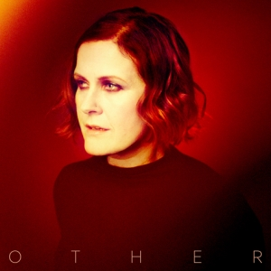

Released in 1995, Singles is Moyet's first greatest hits album.
Click the album cover to reveal some lyrics.
Released in 2004, Voice is a collection of covers of classic songs designed to showcase Alison's voice.
Click the album cover to reveal some lyrics.
Released in 2017, Other was Alison's first album of new songs since her 2013 album, The Minutes.
Click the album cover to reveal some lyrics.
Click to find out more about Alison's albums
Learn more